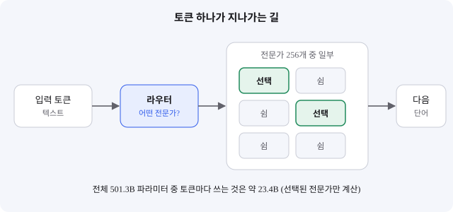
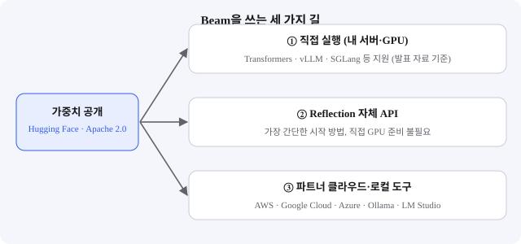

Beam: 전체의 약 5%만 깨우는 5,010억 파라미터 오픈 웨이트 모델
- 미국의 Reflection AI가 첫 오픈 웨이트 모델 Beam을 10월 5일 발표하고, 10월 16일 가중치를 Apache 2.0 라이선스로 공개했다.
- 전체 501.3B 파라미터 중 토큰마다 23.4B만 계산하는 MoE 구조이고, 컨텍스트는 100만 토큰이다. 회사 자체 발표로는 SWE-bench Verified 81.6%를 기록했다.
- 입문 개발자는 이 모델을 내 PC에서 돌리기보다, 공식 API나 클라우드 경로로 먼저 써 보고 구조만 익히는 편이 현실적이다.
미국 AI 스타트업 Reflection AI가 내놓은 Beam은 "가장 강한 모델"이라기보다 "많이 가지고 있지만 조금만 꺼내 쓰는" 구조로 주목받았다. 발표 직후 개발자 블로그들은 가중치가 아직 없다는 점을 먼저 짚었고, 열흘 뒤 가중치가 풀리면서 본격적인 검증 이야기가 이어지고 있다.
01한눈에 보기
Beam은 MoE(Mixture of Experts, 전문가 혼합) 구조입니다. 큰 도서관에 전문 사서가 256명 있다고 상상해 보세요. 질문이 들어올 때마다 모든 사서가 일하지 않고, 안내 데스크(라우터)가 관련 분야 사서 몇 명만 골라 보내는 방식입니다. Beam은 이 방식을 써서 전체 501.3B 파라미터 가운데 토큰 하나를 처리할 때 23.4B만 씁니다. 전체 크기는 크지만 실제 계산량은 작게 유지하려는 설계입니다.

02어떻게 동작하나요
순서는 간단합니다. 먼저 입력 텍스트가 토큰(단어 조각)으로 나뉘어 들어옵니다. 모델 안에는 52개의 층이 있고, 그중 49개가 MoE 층입니다. 각 MoE 층에서 라우터가 256개의 전문가 중 일부를 골라 계산을 맡기고, 고른 전문가들의 결과만 합쳐 다음 층으로 넘깁니다. 주의(attention) 부분은 Gated GQA와 슬라이딩 윈도우 주의를 함께 씁니다. 공식 모델 카드에 따르면 입력은 최대 100만 토큰까지 받으며, 입력은 텍스트만 지원합니다.
가중치는 BF16, FP8, NVFP4 세 가지 정밀도로 제공됩니다. 숫자 표현을 더 짧게 쓸수록 파일과 메모리 부담은 줄지만, 정확도가 조금 달라질 수 있습니다. Reflection은 이 세 형식의 벤치마크 점수를 함께 공개했는데, 보고된 점수 차이는 대부분 2%p 안팎이었습니다.

03왜 지금 화제인가요
발표와 공개가 두 번 있었고, 개발자 반응도 시점마다 달랐습니다. 10월 5일 발표 때는 "오픈 모델이라고 하지만 가중치를 받을 수 없다"는 지적이 먼저 나왔습니다. 10월 16일 가중치가 Hugging Face에 올라오면서 논의가 실제 사용 쪽으로 옮겨 갔습니다.
04관련 나라·기업
| 구분 | 이름 | 어떤 관련이 있나 |
|---|---|---|
| 나라 | 미국 | Beam을 개발한 Reflection AI의 본사 국가 |
| 기업 | Reflection AI | Beam을 발표하고 가중치와 모델 카드를 공개한 개발사 |
| 기업 | NVIDIA | 출처 글들이 "엔비디아 지원 기업"으로 소개한 Reflection의 투자 측 기업. 학습·추론 환경과의 직접 관계는 이 글에서 확인하지 못했다 |
05기존 방식과 무엇이 다른가
| 비교 항목 | 기존 밀집(dense) 모델 | Beam (MoE) |
|---|---|---|
| 토큰 하나의 계산 | 모든 파라미터를 계산 | 선택된 전문가만 계산 (활성 23.4B) |
| 전체 크기 대비 계산량 | 크기와 계산량이 거의 비례 | 전체 대비 계산량이 작게 유지 |
| 입력 길이 | 모델마다 다름 | 최대 1M 토큰, 텍스트 전용 |
| 공개 방식 | API 전용이거나 가중치 공개 | Apache 2.0 가중치 + 자체 API + 파트너 경로 |
핵심은 "크기가 크다"가 아니라 "한 번에 쓰는 양이 작다"입니다. 다만 전체 가중치는 메모리에 올라가야 하므로, 계산이 가볍다고 해서 PC에서 쉽게 돌아간다는 뜻은 아닙니다.
06직접 해 보기
이 글에서는 명령어를 확인하지 못해 단계 설명만 씁니다. 실행 명령은 공식 개발자 문서에서 직접 확인한 뒤 따라 하세요.
1단계: 모델 카드 읽기
Hugging Face의 Beam 페이지와 Reflection 공식 모델 카드에서 라이선스, 정밀도 형식(BF16·FP8·NVFP4), 텍스트 전용이라는 점을 먼저 확인합니다.
2단계: 실행 환경 정하기
501B 규모의 가중치는 내 노트북에 맞지 않습니다. 직접 실행 경로를 고르기 전에 필요한 GPU 메모리를 공식 문서에서 확인하세요. 공식 발표에는 하드웨어 기준이 없었습니다.
3단계: 가장 작은 실험부터
처음에는 Reflection 자체 API나 파트너 클라우드에서 짧은 질문 몇 개만 던져 보고, 응답 속도와 비용을 기록해 두면 이후 판단에 도움이 됩니다.
07주의할 점과 한계
- 벤치마크는 모두 회사 자체 발표입니다. 모델 카드에는 Beam의 점수만 있고, 다른 모델과 나란히 비교한 표는 없었습니다.
- 대표 수치는 SWE-bench Verified 81.6%(BF16), SWE-bench Pro v2-Hard 76.5%, Terminal-Bench v2.1 80.1%입니다. 주로 코딩·에이전트 작업 중심입니다.
- 효율이 얼마나 좋은지는 독립 검증이 더 필요합니다. 블로그의 효율 추정은 계산식에 기반한 추정이지 실측이 아닙니다.
- "오픈 웨이트"는 가중치를 내려받을 수 있다는 뜻이고, 학습 데이터와 학습 과정까지 공개했다는 뜻은 아닙니다. 라이선스 문구와 정책은 Hugging Face에서 직접 확인하세요.
08정리
Beam은 "크게 가지고 작게 쓴다"는 MoE 설계를 오픈 웨이트로 풀었다는 점에서 의미가 있습니다. 발표 때 가중치가 없다는 논란을 겪었지만, 열흘 뒤 Apache 2.0 라이선스로 공개되면서 누구나 검증할 수 있는 상태가 되었습니다.
입문 개발자에게 중요한 것은 모델 이름보다 구조를 이해하는 일입니다. 전문가 혼합, 활성 파라미터, 라이선스라는 세 단어만 알고 있어도 다음에 나올 모델의 발표문을 훨씬 정확하게 읽을 수 있습니다.
09참고한 글
- Beam is now available — Reflection AI 공식 블로그 reflection.ai · 2026.10.16
- Beam 모델 카드 — Reflection AI reflection.ai · 공식 문서
- Reflection AI's Beam Is an Open-Weight Model You Can't Download Yet Medium · 2026.10.06
- 빔: 리플렉션의 501B 오픈 웨이트 모델 — 박재홍 위키독스 · 2026.10.06